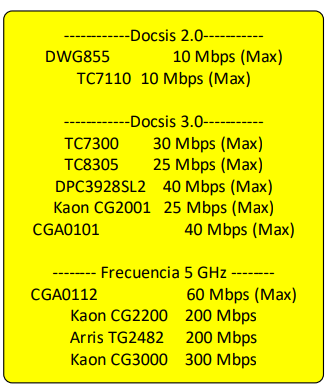

Accion:
Se le indica que tiene saldo
vencido.
Se brinda soporte pero NO se
genera averia.
Exceptuando si se tiene bloqueo y
tiene portadora OFF
Tipificación:
Indicar que cancele, se tipifica
como
consultas-> Factura-> Residencial
->Detalle ->Saldo, fecha de corte y
pag
*** Guion ***
Presiona el boton para copiar
PAGOS RECIENTES
×
Accion:
En la opción 25 revisar el número
telefónico y el
virtual de internet. Cobranza en
estatus 1 o 26.
Suspendido:
Tipificar como:
Reclamos -> Servicios bloqueados -
>Internet HFC
Servicio bloqueado mayor a 2 horas
al pago WF
*** Guion ***
Presiona el boton para copiar
ORDENES ABIERTAS
×
Accion:Informar al cliente sobre el aumento de velocidad
o cambio de tecnología que se está realizando.
Si la orden está en etapa comercial se debe de
generar caso WF para el area quien generó la OS
*** Guion ***
Presiona el boton para copiar
EQUIPO SOPORTA VELOCIDAD?
×
Accion:
Ingresar WF por cambio de equipo
Tipificación WF:
Reclamos -> Averias -> Internet HFC ->
Cambio de equipo por aumento de
velocidad WF
Niveles de portadoras:

FALLA GENERAL
×
Accion:
Consultar por nodo , CMTS y
afectaciones generales.
Tipificar:Tramites cortos -> avería colectiva -
-> Internet HFC
-> Averia colectiva -> Falla general del
servicio -R
*** Guion ***
Presiona el boton para copiar
QUEJAS ABIERTAS
×Accion
Seguimiento a la queja:Tipificación
Depende del tiempo de generación
de la queja
Revisar quejas y casos Qflow
anteriores.
Aplicar politica de cliente
reincidente.
*** Guion ***
Presiona el boton para copiar
PUERTOS EN DOWN O DORMANT
×Accion
Confirmar que el cable coaxial esté bien
conectado, apagar y encender el cable modem.
Despues de haber sincronizado las led, esperar
un minuto y confirmar la navegación aunque no
cambie de estado en la UMP.
No levanto el servicio
Se ingresa queja a etapa CZO, en el
memo indicar el estado del puerto.
Tipificacion
Reclamos --> Averias --> Interneh HFC --> No navega --> Se genera Averia
FALLA VOZ Y DATOS ?
×
Accion:
0. Verificar que el conector este bien apretado .
1. Desconectar de la corriente.
2.Solo Modem RCA (Quitar Tapa de Bateria,
deslizar seguro a la Izq o Derecha, Retirar Bateria.)
3. Conectar Energia y Conectar Bateria.
LEVANTO EL SERVICIO?:
SI --> Reclamos -> Averias -> Internet HFC
No navega -> Conexiones fisicas
NO -->Se genera averia a etapa CZO, en el memo indicar
voz y datos sin señal con niveles erroneos.
Reclamos -> Averias -> Internet HFC
No navega -> Se generó avería
¿SERVICIO CON NIVELES OK?
×
Accion:
1. Verificar que el conector este bien apretado.
2. Realizar Reboot desde la UMP soporte.
3. Actualizar en UMP y revisar los niveles. (se hace
cuando las led del modem estén sincronizadas)
Si los niveles no mejoran
se genera Avería y se tipifica como:
Reclamos -> Averias -> Internet HFC
No navega -> Se generó avería
Verificar niveles en UMP y revisar la
cantidad
de portadoras de transmisión.